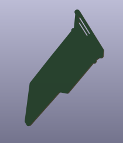

Welcome to this repository, which serves as a template for DEFCON 31's Shitty Add On (SAO) project. SAO stands for "Shitty Add On," a playful and creative initiative that invites participants to design unconventional and often humorous add-ons for DEFCON badges. Inspired by the Shitty Add-On v1.69bis standard, this project encourages individuals to unleash their creativity and technical skills to create unique badge accessories. To learn more about the SAO project, check out the article on Hackaday:
https://hackaday.com/2019/03/20/introducing-the-shitty-add-on-v1-69bis-standard.
DEFCON 31 provides a comprehensive PDF guide for Badge Add-Ons, which you can access here:
https://media.defcon.org/DEF%20CON%2031/DEF%20CON%2031%20badge/Badge%20Add-On.pdf.
This guide contains detailed information, instructions, and specifications for creating and integrating SAOs into DEFCON 31 badges. Feel free to explore the content of this repository and utilize the template to showcase your imaginative and unconventional SAO creations during DEFCON 31.